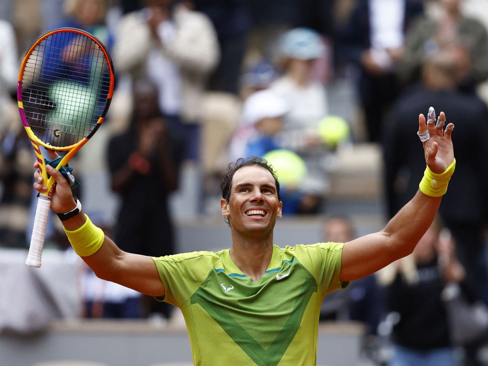

Rafael Nadal Parera(Manacor, Mallorca, España, 3 de junio de 1986), más conocido como Rafa Nadal, es un tenista profesional español que ocupa la segunda posición del ranking ATP.
Está considerado como el mejor tenista de la historia en pistas de tierra batida y uno de los mejores de todos los tiempos. Hasta la fecha, es el tenista masculino con mayor número de títulos de Grand Slam en individuales, con 22, por delante del serbio Novak Djokovic, con 21, y del suizo Roger Federer, con 20.
Ocupa la cuarta posición en la lista de jugadores con más títulos ATP con 92, sólo por detrás de Jimmy Connors (109), de Roger Federer (103) y de Ivan Lendl (94). Es el tenista con más títulos (90) y victorias (972) en outdoor y el tenista con más títulos conseguidos en tierra batida (63) de toda la Era Abierta. Adicionalmente, se encuentra en segunda posición como jugador con más títulos ATP Tour 500 ganados (23), sólo por detrás de Roger Federer (24).
Es el tenista masculino más joven de la historia en conseguir el Golden Slam en la carrera, que consiste en lograr los cuatro Grand Slam y la medalla de oro en los Juegos Olímpicos a lo largo de la carrera, logro únicamente compartido con Andre Agassi. Es, junto a Novak Djokovic, uno de los dos tenistas masculinos en toda la Era Abierta en conseguir el Doble Grand Slam, que consiste en ganar, al menos dos veces, cada uno de los cuatro Grand Slam a lo largo de la carrera. Además, ambos tenistas son los únicos que han sido capaces de ganar en un mismo año (2010 y 2021) tres Grand Slams en tres superficies distintas. Nadal es el tenista que más veces ganó desde el comienzo de la Era Abierta un mismo torneo de Grand Slam y Masters 1000: Roland Garros y Montecarlo (el primero en catorce ocasiones y el segundo en once); y el primero en ganar al menos un título de Grand Slam durante diez temporadas consecutivas: desde 2005 hasta 2014.
Es el tenista español con el mayor número de títulos individuales (92, superando a Manuel Orantes y a Conchita Martínez, con 33), más títulos de Grand Slam (22, superando a Manolo Santana y a Arantxa Sánchez Vicario, con 4), más títulos de Masters 1000 (36, superando a Conchita Martínez, con 9) y con más semanas en el número uno del ranking mundial de la ATP, con 209. Es el único tenista en la historia en ser número uno en tres décadas diferentes: 2000, 2010 y 2020.
